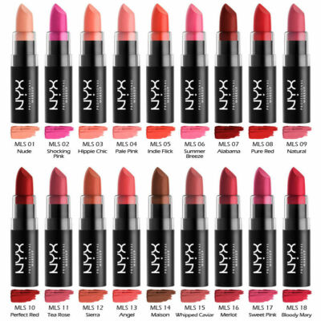
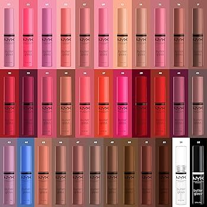
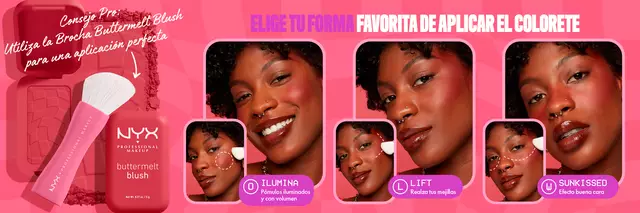

La firma nacida en Los Ángeles en 1999, inicialmente con una filosofía DIY y desde 2014 parte del universo L’Oréal, ha logrado algo difícil en la era postviral: conectar con la Generación Z. En España, ha duplicado ventas en solo dos años y ya es la cuarta marca de maquillaje de gran consumo, rozando los cinco puntos de cuota de mercado en 2025, según datos de la compañía. Todo eso sin ecommerce propio en el país.
Pintalabios Mate |
Gloss |
Colorete |
|